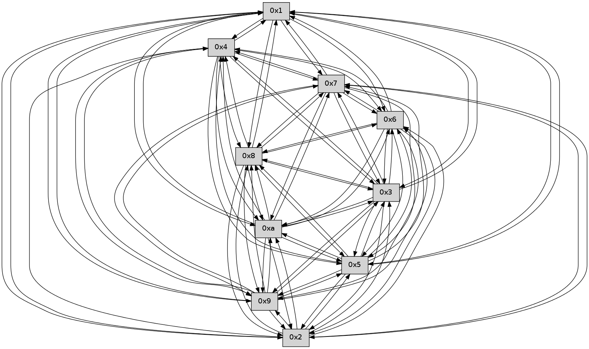

>> << IDX [start] -100 -25 -5 +0 +5 +25 +100 [375.578793049]
 Previous packets
----------------------------------------------------------------------
370.061873 beacon01(faad) #0 coord=01,02,03,04,05,06,07,0a,09,08 cycle=688.0ms assoc
-- color-indic=0 64 7a ed
370.071857 beacon02(faad) #0 coord=01,02,03,04,05,06,07,0a,09,08 cycle=688.0ms assoc 64 e9 dc
370.081855 beacon03(faad) #0 coord=01,02,03,04,05,06,07,0a,09,08 cycle=688.0ms assoc 64 93 91
370.091857 beacon04(faad) #0 coord=01,02,03,04,05,06,07,0a,09,08 cycle=688.0ms assoc 64 e4 7b
370.101855 beacon05(faad) #0 coord=01,02,03,04,05,06,07,0a,09,08 cycle=688.0ms assoc 64 9e 36
370.111857 beacon06(faad) #0 coord=01,02,03,04,05,06,07,0a,09,08 cycle=688.0ms assoc 64 10 e1
370.121858 beacon07(faad) #0 coord=01,02,03,04,05,06,07,0a,09,08 cycle=688.0ms assoc 64 6a ac
370.131862 beacon0a(faad) #0 coord=01,02,03,04,05,06,07,0a,09,08 cycle=688.0ms assoc 64 1b a7
370.141862 beacon09(faad) #0 coord=01,02,03,04,05,06,07,0a,09,08 cycle=688.0ms assoc 64 95 70
370.151861 beacon08(faad) #0 coord=01,02,03,04,05,06,07,0a,09,08 cycle=688.0ms assoc 64 ef 3d
370.163027 [Hello(5): seq=240 sym=7,6,4,3,1,9,8,10,2 sysInfo= stat=7:10,0,0,0/6:12,0,0,0/4:12,0,0,0/3:8,0,0,0/1:14,0,0,0/9:6,0,0,0/8:9,0,0,0/10:9,0,0,0/2:3,0,0,0]
370.166030 [Hello(10): seq=172 sym=6,3,2,5,9,8,7,4,1 sysInfo= stat=6:2,0,0,0/3:15,0,0,0/2:6,0,0,0/5:3,0,0,0/9:0,0,0,0/8:5,0,0,0/7:6,0,0,0/4:12,0,0,0/1:0,0,0,0]
370.168597 [Hello(3): seq=240 sym=1,7,6,4,8,9,10,5 sysInfo= stat=1:12,0,0,0/7:6,0,0,0/6:2,0,0,0/4:6,0,0,0/8:5,0,0,0/9:13,0,0,0/10:7,0,0,0/5:3,0,0,0]
370.172702 [Hello(2): seq=237 sym=4,5,7,6,3,9,8,10,1 sysInfo= stat=4:8,0,0,0/5:12,0,0,0/7:5,0,0,0/6:12,0,0,0/3:0,0,0,0/9:0,0,0,0/8:12,0,0,0/10:9,0,0,0/1:11,0,0,0]
370.177292 [Hello(8): seq=183 sym=5,2,3,4,7,6,9,10,1 sysInfo= stat=5:9,0,0,0/2:12,0,0,0/3:9,0,0,0/4:11,0,0,0/7:1,0,0,0/6:4,0,0,0/9:2,0,0,0/10:15,0,0,0/1:6,0,0,0]
370.181539 [Hello(9): seq=183 sym=5,2,3,4,7,6,8,10,1 sysInfo= stat=5:3,0,0,0/2:14,0,0,0/3:14,0,0,0/4:7,0,0,0/7:2,0,0,0/6:8,0,0,0/8:9,0,0,0/10:4,0,0,0/1:3,0,0,0]
370.189977 [Hello(4): seq=240 sym=5,7,6,2,3,9,8,10,1 sysInfo= stat=5:1,0,0,0/7:11,0,0,0/6:14,0,0,0/2:6,0,0,0/3:11,0,0,0/9:7,0,0,0/8:13,0,0,0/10:15,0,0,0/1:14,0,0,0]
----------------------------------------------------------------------
370.850005 beacon01(faad) #0 coord=01,02,03,04,05,06,07,0a,09,08 cycle=688.0ms assoc
-- color-indic=0 64 ae d8
370.859988 beacon02(faad) #0 coord=01,02,03,04,05,06,07,0a,09,08 cycle=688.0ms assoc 64 3d e9
370.869988 beacon03(faad) #0 coord=01,02,03,04,05,06,07,0a,09,08 cycle=688.0ms assoc 64 47 a4
370.879988 beacon04(faad) #0 coord=01,02,03,04,05,06,07,0a,09,08 cycle=688.0ms assoc 64 30 4e
370.889987 beacon05(faad) #0 coord=01,02,03,04,05,06,07,0a,09,08 cycle=688.0ms assoc 64 4a 03
370.899988 beacon06(faad) #0 coord=01,02,03,04,05,06,07,0a,09,08 cycle=688.0ms assoc 64 c4 d4
370.909988 beacon07(faad) #0 coord=01,02,03,04,05,06,07,0a,09,08 cycle=688.0ms assoc 64 be 99
370.919992 beacon0a(faad) #0 coord=01,02,03,04,05,06,07,0a,09,08 cycle=688.0ms assoc 64 cf 92
370.929992 beacon09(faad) #0 coord=01,02,03,04,05,06,07,0a,09,08 cycle=688.0ms assoc 64 41 45
370.939993 beacon08(faad) #0 coord=01,02,03,04,05,06,07,0a,09,08 cycle=688.0ms assoc 64 3b 08
370.951145 [Hello(7): seq=240 sym=2,3,5,6,4,8,9,10,1 sysInfo= stat=2:12,0,0,0/3:9,0,0,0/5:2,0,0,0/6:15,0,0,0/4:11,0,0,0/8:7,0,0,0/9:8,0,0,0/10:5,0,0,0/1:3,0,0,0]
370.954964 [Hello(1): seq=149 sym=4,2,9,5,10,3,8,6,7 sysInfo= stat=4:3,0,0,0/2:5,0,0,0/9:12,0,0,0/5:7,0,0,0/10:0,0,0,0/3:6,0,0,0/8:10,0,0,0/6:0,0,0,0/7:4,0,0,0]
370.962602 [Hello(6): seq=240 sym=2,3,5,4,7,9,8,10,1 sysInfo= stat=2:15,0,0,0/3:13,0,0,0/5:14,0,0,0/4:3,0,0,0/7:9,0,0,0/9:12,0,0,0/8:13,0,0,0/10:7,0,0,0/1:15,0,0,0]
----------------------------------------------------------------------
371.638135 beacon01(faad) #0 coord=01,02,03,04,05,06,07,0a,09,08 cycle=688.0ms assoc
-- color-indic=0 64 12 dd
371.648119 beacon02(faad) #0 coord=01,02,03,04,05,06,07,0a,09,08 cycle=688.0ms assoc 64 81 ec
371.658118 beacon03(faad) #0 coord=01,02,03,04,05,06,07,0a,09,08 cycle=688.0ms assoc 64 fb a1
371.668120 beacon04(faad) #0 coord=01,02,03,04,05,06,07,0a,09,08 cycle=688.0ms assoc 64 8c 4b
371.678119 beacon05(faad) #0 coord=01,02,03,04,05,06,07,0a,09,08 cycle=688.0ms assoc 64 f6 06
371.688118 beacon06(faad) #0 coord=01,02,03,04,05,06,07,0a,09,08 cycle=688.0ms assoc 64 78 d1
371.698119 beacon07(faad) #0 coord=01,02,03,04,05,06,07,0a,09,08 cycle=688.0ms assoc 64 02 9c
371.708123 beacon0a(faad) #0 coord=01,02,03,04,05,06,07,0a,09,08 cycle=688.0ms assoc 64 73 97
371.718123 beacon09(faad) #0 coord=01,02,03,04,05,06,07,0a,09,08 cycle=688.0ms assoc 64 fd 40
371.728123 beacon08(faad) #0 coord=01,02,03,04,05,06,07,0a,09,08 cycle=688.0ms assoc 64 87 0d
371.739597 [Hello(8): seq=184 sym=5,2,3,4,7,6,9,10,1 sysInfo= stat=5:9,0,0,0/2:12,0,0,0/3:9,0,0,0/4:12,0,0,0/7:2,0,0,0/6:5,0,0,0/9:3,0,0,0/10:15,0,0,0/1:7,0,0,0]
371.743266 [Hello(2): seq=238 sym=4,5,7,6,3,9,8,10,1 sysInfo= stat=4:9,0,0,0/5:12,0,0,0/7:6,0,0,0/6:13,0,0,0/3:0,0,0,0/9:1,0,0,0/8:13,0,0,0/10:9,0,0,0/1:12,0,0,0]
371.745807 [Hello(4): seq=241 sym=5,7,6,2,3,9,8,10,1 sysInfo= stat=5:1,0,0,0/7:12,0,0,0/6:15,0,0,0/2:6,0,0,0/3:11,0,0,0/9:7,0,0,0/8:13,0,0,0/10:15,0,0,0/1:15,0,0,0]
371.748498 [Hello(9): seq=184 sym=5,2,3,4,7,6,8,10,1 sysInfo= stat=5:3,0,0,0/2:14,0,0,0/3:14,0,0,0/4:8,0,0,0/7:3,0,0,0/6:9,0,0,0/8:9,0,0,0/10:4,0,0,0/1:4,0,0,0]
371.751079 [Hello(3): seq=241 sym=1,7,6,2,4,8,9,10,5 sysInfo= stat=1:13,0,0,0/7:7,0,0,0/6:3,0,0,0/2:0,0,0,0/4:7,0,0,0/8:6,0,0,0/9:14,0,0,0/10:7,0,0,0/5:3,0,0,0]
371.758376 [Hello(5): seq=241 sym=7,6,4,3,1,9,8,10,2 sysInfo= stat=7:11,0,0,0/6:13,0,0,0/4:13,0,0,0/3:9,0,0,0/1:15,0,0,0/9:7,0,0,0/8:10,0,0,0/10:10,0,0,0/2:4,0,0,0]
371.762548 [Hello(10): seq=173 sym=6,3,2,5,9,8,7,4,1 sysInfo= stat=6:3,0,0,0/3:0,0,0,0/2:7,0,0,0/5:3,0,0,0/9:1,0,0,0/8:6,0,0,0/7:7,0,0,0/4:13,0,0,0/1:1,0,0,0]
----------------------------------------------------------------------
372.426266 beacon01(faad) #0 coord=01,02,03,04,05,06,07,0a,09,08 cycle=688.0ms assoc
-- color-indic=0 64 d6 d3
372.436248 beacon02(faad) #0 coord=01,02,03,04,05,06,07,0a,09,08 cycle=688.0ms assoc 64 45 e2
372.446248 beacon03(faad) #0 coord=01,02,03,04,05,06,07,0a,09,08 cycle=688.0ms assoc 64 3f af
372.456248 beacon04(faad) #0 coord=01,02,03,04,05,06,07,0a,09,08 cycle=688.0ms assoc 64 48 45
372.466248 beacon05(faad) #0 coord=01,02,03,04,05,06,07,0a,09,08 cycle=688.0ms assoc 64 32 08
372.476249 beacon06(faad) #0 coord=01,02,03,04,05,06,07,0a,09,08 cycle=688.0ms assoc 64 bc df
372.486250 beacon07(faad) #0 coord=01,02,03,04,05,06,07,0a,09,08 cycle=688.0ms assoc 64 c6 92
372.496254 beacon0a(faad) #0 coord=01,02,03,04,05,06,07,0a,09,08 cycle=688.0ms assoc 64 b7 99
372.506253 beacon09(faad) #0 coord=01,02,03,04,05,06,07,0a,09,08 cycle=688.0ms assoc 64 39 4e
372.516255 beacon08(faad) #0 coord=01,02,03,04,05,06,07,0a,09,08 cycle=688.0ms assoc 64 43 03
372.527403 [Hello(6): seq=241 sym=2,3,5,4,7,9,8,10,1 sysInfo= stat=2:0,0,0,0/3:14,0,0,0/5:15,0,0,0/4:4,0,0,0/7:9,0,0,0/9:13,0,0,0/8:14,0,0,0/10:8,0,0,0/1:15,0,0,0]
372.530746 [Hello(7): seq=241 sym=2,3,5,6,4,8,9,10,1 sysInfo= stat=2:13,0,0,0/3:10,0,0,0/5:3,0,0,0/6:0,0,0,0/4:12,0,0,0/8:8,0,0,0/9:9,0,0,0/10:6,0,0,0/1:4,0,0,0]
----------------------------------------------------------------------
373.214396 beacon01(faad) #0 coord=01,02,03,04,05,06,07,0a,09,08 cycle=688.0ms assoc
-- color-indic=0 64 6a d6
373.224379 beacon02(faad) #0 coord=01,02,03,04,05,06,07,0a,09,08 cycle=688.0ms assoc 64 f9 e7
373.234379 beacon03(faad) #0 coord=01,02,03,04,05,06,07,0a,09,08 cycle=688.0ms assoc 64 83 aa
373.244379 beacon04(faad) #0 coord=01,02,03,04,05,06,07,0a,09,08 cycle=688.0ms assoc 64 f4 40
373.254378 beacon05(faad) #0 coord=01,02,03,04,05,06,07,0a,09,08 cycle=688.0ms assoc 64 8e 0d
373.264380 beacon06(faad) #0 coord=01,02,03,04,05,06,07,0a,09,08 cycle=688.0ms assoc 64 00 da
373.274380 beacon07(faad) #0 coord=01,02,03,04,05,06,07,0a,09,08 cycle=688.0ms assoc 64 7a 97
373.284383 beacon0a(faad) #0 coord=01,02,03,04,05,06,07,0a,09,08 cycle=688.0ms assoc 64 0b 9c
373.294384 beacon09(faad) #0 coord=01,02,03,04,05,06,07,0a,09,08 cycle=688.0ms assoc 64 85 4b
373.304385 beacon08(faad) #0 coord=01,02,03,04,05,06,07,0a,09,08 cycle=688.0ms assoc 64 ff 06
373.315874 [Hello(2): seq=239 sym=4,5,7,6,3,9,8,10,1 sysInfo= stat=4:10,0,0,0/5:13,0,0,0/7:7,0,0,0/6:14,0,0,0/3:1,0,0,0/9:2,0,0,0/8:13,0,0,0/10:10,0,0,0/1:12,0,0,0]
373.318543 [Hello(3): seq=242 sym=1,7,6,2,4,8,9,10,5 sysInfo= stat=1:14,0,0,0/7:7,0,0,0/6:4,0,0,0/2:0,0,0,0/4:7,0,0,0/8:6,0,0,0/9:14,0,0,0/10:8,0,0,0/5:4,0,0,0]
373.321116 [Hello(5): seq=242 sym=7,6,4,3,1,9,8,10,2 sysInfo= stat=7:12,0,0,0/6:14,0,0,0/4:13,0,0,0/3:9,0,0,0/1:15,0,0,0/9:7,0,0,0/8:10,0,0,0/10:11,0,0,0/2:4,0,0,0]
373.323918 [Hello(8): seq=185 sym=5,2,3,4,7,6,9,10,1 sysInfo= stat=5:10,0,0,0/2:13,0,0,0/3:10,0,0,0/4:13,0,0,0/7:3,0,0,0/6:6,0,0,0/9:4,0,0,0/10:0,0,0,0/1:7,0,0,0]
373.328598 [Hello(9): seq=185 sym=5,2,3,4,7,6,8,10,1 sysInfo= stat=5:4,0,0,0/2:14,0,0,0/3:15,0,0,0/4:8,0,0,0/7:4,0,0,0/6:10,0,0,0/8:9,0,0,0/10:5,0,0,0/1:4,0,0,0]
373.334949 [Hello(10): seq=174 sym=6,3,2,5,9,8,7,4,1 sysInfo= stat=6:4,0,0,0/3:0,0,0,0/2:7,0,0,0/5:3,0,0,0/9:1,0,0,0/8:6,0,0,0/7:8,0,0,0/4:13,0,0,0/1:1,0,0,0]
----------------------------------------------------------------------
374.002528 beacon01(faad) #0 coord=01,02,03,04,05,06,07,0a,09,08 cycle=688.0ms assoc
-- color-indic=0 64 5e ce
374.012509 beacon02(faad) #0 coord=01,02,03,04,05,06,07,0a,09,08 cycle=688.0ms assoc 64 cd ff
374.022510 beacon03(faad) #0 coord=01,02,03,04,05,06,07,0a,09,08 cycle=688.0ms assoc 64 b7 b2
374.032509 beacon04(faad) #0 coord=01,02,03,04,05,06,07,0a,09,08 cycle=688.0ms assoc 64 c0 58
374.042511 beacon05(faad) #0 coord=01,02,03,04,05,06,07,0a,09,08 cycle=688.0ms assoc 64 ba 15
374.052510 beacon06(faad) #0 coord=01,02,03,04,05,06,07,0a,09,08 cycle=688.0ms assoc 64 34 c2
374.062512 beacon07(faad) #0 coord=01,02,03,04,05,06,07,0a,09,08 cycle=688.0ms assoc 64 4e 8f
374.072516 beacon0a(faad) #0 coord=01,02,03,04,05,06,07,0a,09,08 cycle=688.0ms assoc 64 3f 84
374.082516 beacon09(faad) #0 coord=01,02,03,04,05,06,07,0a,09,08 cycle=688.0ms assoc 64 b1 53
374.092515 beacon08(faad) #0 coord=01,02,03,04,05,06,07,0a,09,08 cycle=688.0ms assoc 64 cb 1e
374.103394 [Hello(1): seq=151 sym=4,2,9,5,10,3,8,6,7 sysInfo= stat=4:4,0,0,0/2:7,0,0,0/9:14,0,0,0/5:9,0,0,0/10:2,0,0,0/3:8,0,0,0/8:12,0,0,0/6:1,0,0,0/7:4,0,0,0]
374.106682 [Hello(7): seq=242 sym=2,3,5,6,4,8,9,10,1 sysInfo= stat=2:14,0,0,0/3:11,0,0,0/5:4,0,0,0/6:0,0,0,0/4:12,0,0,0/8:9,0,0,0/9:10,0,0,0/10:7,0,0,0/1:4,0,0,0]
374.111934 [Hello(6): seq=242 sym=2,3,5,4,7,9,8,10,1 sysInfo= stat=2:1,0,0,0/3:15,0,0,0/5:0,0,0,0/4:4,0,0,0/7:10,0,0,0/9:14,0,0,0/8:15,0,0,0/10:9,0,0,0/1:15,0,0,0]
----------------------------------------------------------------------
374.790660 beacon01(faad) #0 coord=01,02,03,04,05,06,07,0a,09,08 cycle=688.0ms assoc
-- color-indic=0 64 e2 cb
374.800643 beacon02(faad) #0 coord=01,02,03,04,05,06,07,0a,09,08 cycle=688.0ms assoc 64 71 fa
374.810642 beacon03(faad) #0 coord=01,02,03,04,05,06,07,0a,09,08 cycle=688.0ms assoc 64 0b b7
374.820642 beacon04(faad) #0 coord=01,02,03,04,05,06,07,0a,09,08 cycle=688.0ms assoc 64 7c 5d
374.830643 beacon05(faad) #0 coord=01,02,03,04,05,06,07,0a,09,08 cycle=688.0ms assoc 64 06 10
374.840644 beacon06(faad) #0 coord=01,02,03,04,05,06,07,0a,09,08 cycle=688.0ms assoc 64 88 c7
374.850643 beacon07(faad) #0 coord=01,02,03,04,05,06,07,0a,09,08 cycle=688.0ms assoc 64 f2 8a
374.860650 beacon0a(faad) #0 coord=01,02,03,04,05,06,07,0a,09,08 cycle=688.0ms assoc 64 83 81
374.870648 beacon09(faad) #0 coord=01,02,03,04,05,06,07,0a,09,08 cycle=688.0ms assoc 64 0d 56
374.880649 beacon08(faad) #0 coord=01,02,03,04,05,06,07,0a,09,08 cycle=688.0ms assoc 64 77 1b
374.892120 [Hello(10): seq=175 sym=6,3,2,5,9,8,7,4,1 sysInfo= stat=6:5,0,0,0/3:0,0,0,0/2:7,0,0,0/5:3,0,0,0/9:1,0,0,0/8:6,0,0,0/7:9,0,0,0/4:13,0,0,0/1:2,0,0,0]
374.894823 [Hello(5): seq=243 sym=7,6,4,3,1,9,8,10,2 sysInfo= stat=7:13,0,0,0/6:15,0,0,0/4:13,0,0,0/3:9,0,0,0/1:0,0,0,0/9:8,0,0,0/8:11,0,0,0/10:12,0,0,0/2:4,0,0,0]
374.899740 [Hello(3): seq=243 sym=1,7,6,2,4,8,9,10,5 sysInfo= stat=1:15,0,0,0/7:8,0,0,0/6:5,0,0,0/2:0,0,0,0/4:7,0,0,0/8:7,0,0,0/9:15,0,0,0/10:9,0,0,0/5:5,0,0,0]
374.902632 [Hello(9): seq=186 sym=5,2,3,4,7,6,8,10,1 sysInfo= stat=5:4,0,0,0/2:14,0,0,0/3:15,0,0,0/4:8,0,0,0/7:5,0,0,0/6:11,0,0,0/8:9,0,0,0/10:6,0,0,0/1:5,0,0,0]
374.906603 [Hello(4): seq=243 sym=5,7,6,3,9,8,10,1 sysInfo= stat=5:3,0,0,0/7:14,0,0,0/6:1,0,0,0/3:13,0,0,0/9:9,0,0,0/8:14,0,0,0/10:1,0,0,0/1:0,0,0,0]